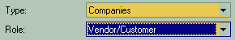
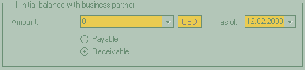
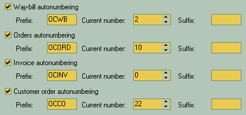
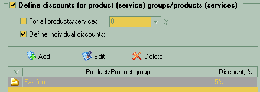
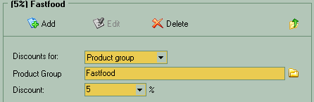
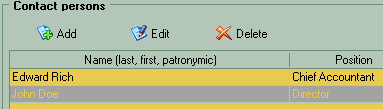
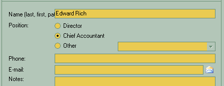
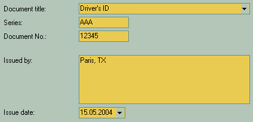
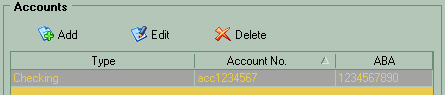
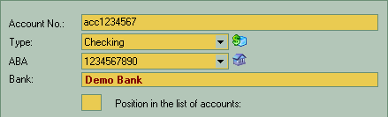

 When you adding a new record you have to choose the type first. It can be "Companies" for businesses with more than one person involved, "Individuals" for private persons, "Employees" for your employees or "Our companies" for your own enterprise in whole. The role is active for "Companies" and "Individuals" selections and specifies whether this partner is buyer, seller or both. |
 The initial balance section at the bottom is useful when you're already made business with this partner, but only recently started to document your trade relations. So here you set the initial financial balance. It's either you owe to this partner or the partner owes you. |
|
In the "Additional Details" sections you may specify the default pricing category for selling thins to this partner. |
 If you adding or editing the description for your own company then the whole "Additional Details" section will also be occupied by optional auto numbering settings for main document types. Here you may prefer to set the prefixes and suffixes for the names of documents created, so it is easy to determine the kind of document by it's name in the various lists. The "Current number" options presenting the in-between numerical value of the document name. You can set this number to be in sync with the current state of respective paper documents you already had before you first used this software. |
 Here you may set the global discount percentage for this partner that will be applied to everything sold to or make a list of individual discounts for any number of products or whole product categories at once. |
 If you chose to add or individual discount on the previous page, then you will appear at this page. You select it will be discount for single product or whole category, then click on the button at the right side of product or category name field. It will be Then you specify the percentage of discount that will be applied and that's all. |
 The next section in the tree is "Contact persons". You see here a list of people's names and positions that you can click on to edit the details. |
 The in details section for personal contact is mostly self-describing. Needed to mention when you select the "Other" option in the predefined positions list then you have to specify new or choose from previously added ones. You can free edit this list to your preferred state. |
 If you adding or editing a record for single person then there will be a specific page where you can add precious details as to the identity of your employees or the private person you have a business with. It is a general kind of data that is not mandatory for you to fill. |
 The last portion of settings deals with banking matters. You can add multiple bank accounts for different purposes. |
 On the "adding/editing account" page you specify account number, the type of this account can be chosen from the respective directory by clicking on ABA can be selected from the preset list or be filled another way by clicking on the Banks directory button and selecting the right one from the list. The "position in the list of accounts" is used when you want to sort accounts list by hand to make the most frequently used at the top of it. |